flowchart LR
A[DOF / SIDOF] --> B[dofjson]
B --> C[nota2md]
B --> D[document2md<br/>OCR]
C --> E[md2akn<br/>artículo, fracción]
D --> E
E --> F[vectores]
LegalIA: corpus abiertos y un atlas de la legislación federal
INFOTEC
Inteligencia Artificial (IA)
Conjunto de teorías, métodos y algoritmos para el desarrollo y estudio de sistemas que presentan un comportamiento que sería identificado como inteligente.
Aprendizaje Computacional
Subárea de IA que estudia el desarrollo e implementación de algoritmos capaces de aprender de datos de manera autónoma sin haber sido explícitamente programados.
Procesamiento de Lenguaje Natural
Conjunto de teorías, métodos y algoritmos para el desarrollo y estudio de sistemas que permitan el entendimiento, generación y manipulación del lenguaje humano.
Derecho y datos
La legislación es, ante todo, texto: leyes, reglamentos y decretos escritos en lenguaje natural que se modifican con el tiempo y que se pueden estudiar como datos.
Así la vemos
Así está
Aplicaciones
Aplicaciones jurídicas
1987
Primera Conferencia Internacional de Inteligencia Artificial y Derecho (ICAIL) (Proceedings of the First International Conference on Artificial Intelligence and Law 1987): el campo se institucionaliza.
GPT-4 y el examen de la barra
GPT-4 “aprobó” el examen de la barra de Estados Unidos (Katz et al. 2024).
Una reevaluación
Al repetir la evaluación, las cifras resultaron más conservadoras (Martínez 2024).
Modelos generativos públicos
Alucinan entre 58 % y 88 % de las veces al preguntar sobre jurisprudencia federal estadounidense (Dahl et al. 2024).
Herramientas comerciales “libres de alucinación”
Aun así se equivocan entre 17 % y 33 % de las veces (Magesh et al. 2025).
Alucinar
Generar una respuesta que suena convincente, pero que cita leyes o casos que no existen o que dicen otra cosa.
Evidencia concentrada en otros países
La validación de los sistemas de IA jurídica se ha concentrado en Estados Unidos y la Unión Europea; para América Latina la evidencia es escasa.
Para México
No se cuenta con puntos de referencia públicos ni con corpus abiertos construidos a partir de las leyes mexicanas vigentes.
Leyes dispersas
La legislación vigente está dispersa en fuentes heterogéneas y es de difícil consulta para quien no es especialista.
Cajas negras
Los modelos de lenguaje operan como cajas negras: no sabemos por qué responden lo que responden.
Confianza
La confianza depende de que la persona usuaria entienda por qué el sistema recomienda algo (Atkinson et al. 2020).
La respuesta debe remitir al artículo
Una respuesta jurídica útil es una que se puede verificar contra el texto vigente de la ley.
Datos abiertos
Corpus que documentan el sistema jurídico mexicano, estandarizados y abiertos.
Modelos especializados
Modelos de lenguaje entrenados con texto jurídico mexicano, liberados abiertamente.
PLN jurídico
Clasificación, resumen y minería de argumentos en los términos del derecho mexicano.
Todo en abierto (Apache 2.0)
Diario Oficial de la Federación (DOF)
Medio oficial donde se publican los decretos, las leyes y sus reformas. Cada reforma aparece como una nota.
Suprema Corte de Justicia de la Nación (SCJN)
Publica las leyes, reglamentos y lineamientos federales en su forma consolidada, con sus textos de reforma fechados.
El archivo
¿Qué formato tienen?
1999
El volumen anual salta de 12,921 a 28,234 notas.
2014
Máximo histórico: 36,041 notas en un año.
Zedillo
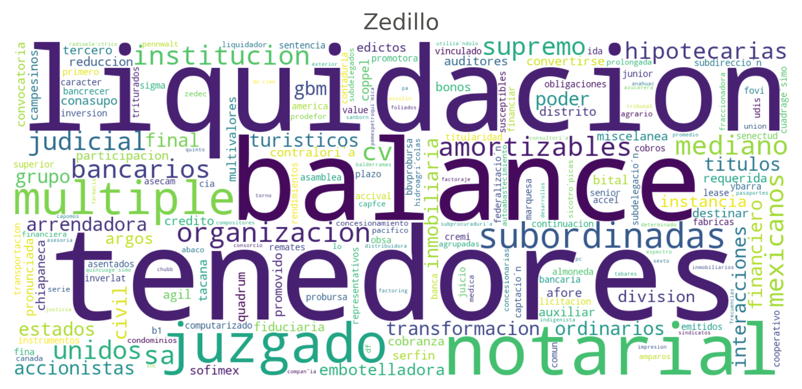
Fox
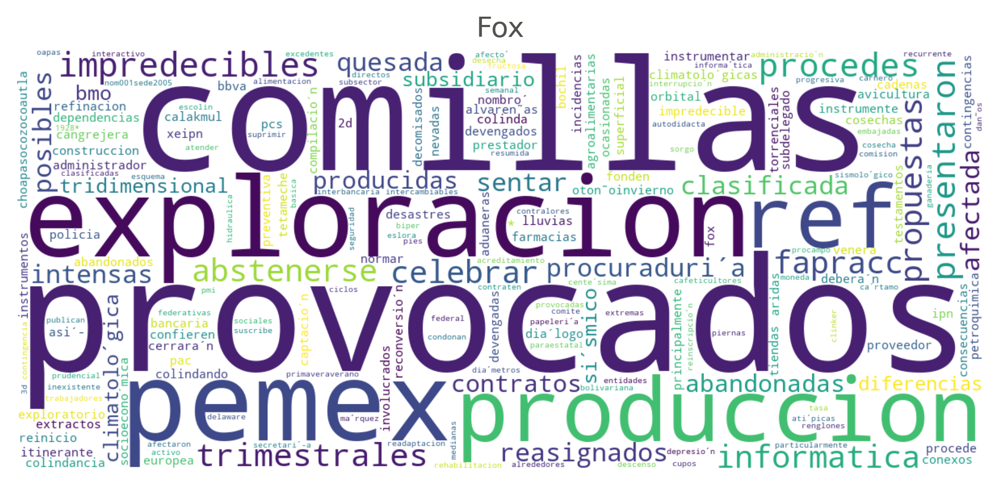
Calderón
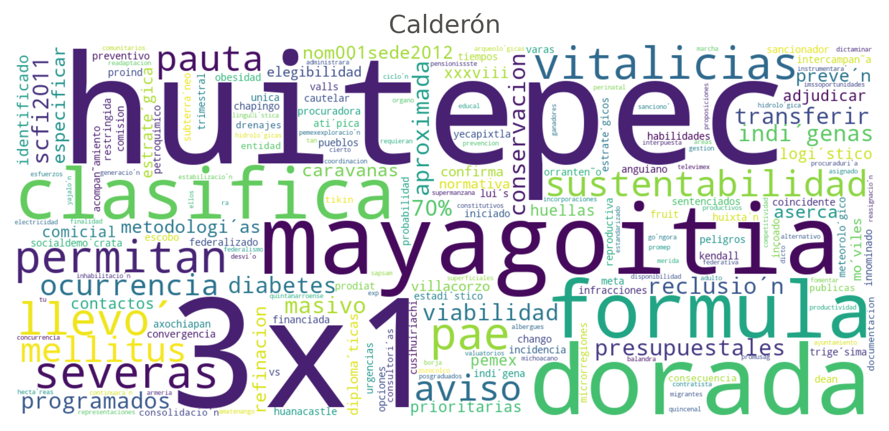
AMLO
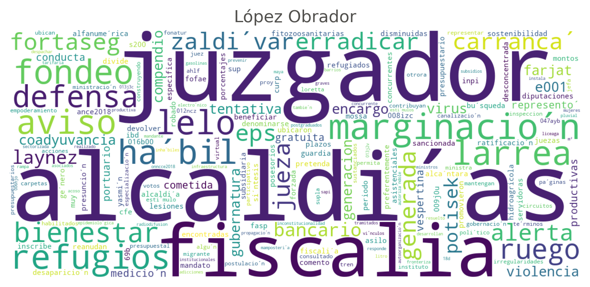
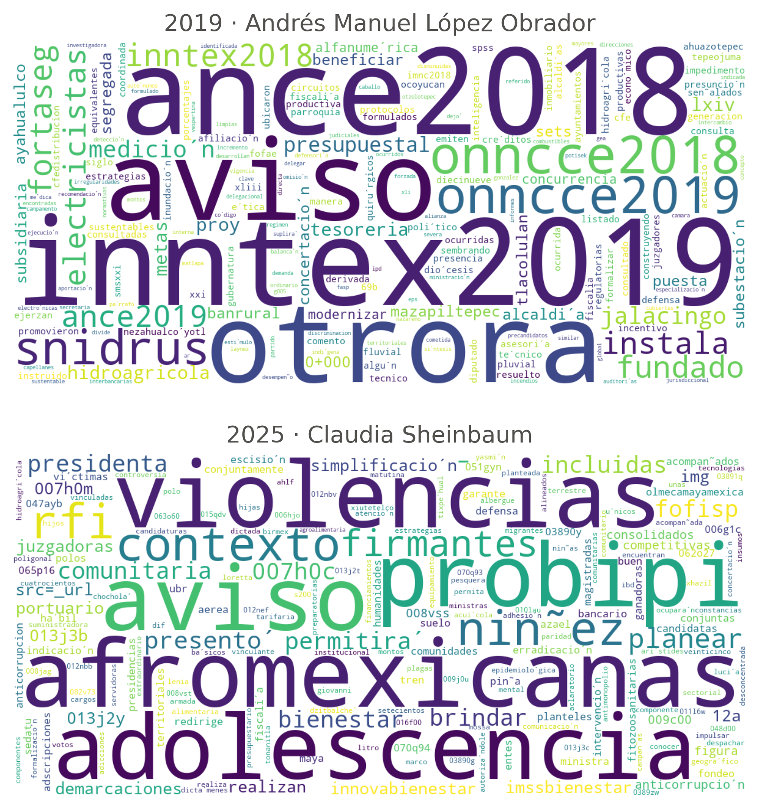
El tipo de documento
La primera palabra del título indica el tipo de documento. En 2025, “aviso” es el 43.9 % de las notas.
Títulos más cortos
La longitud mediana del título cae de unas 20 palabras a 5–6.
Leyes
Enlace con el DOF
flowchart LR
A[DOF / SIDOF] --> B[dofjson]
B --> C[nota2md]
B --> D[document2md<br/>OCR]
C --> E[md2akn<br/>artículo, fracción]
D --> E
E --> F[vectores]
Paquetes en PyPI, licencia Apache 2.0
La idea
Cada decreto modifica artículos. Con todos los decretos en orden, el texto vigente de una ley se vuelve a armar.
Un ejemplo
La Constitución: 1,328 disposiciones, reconstruidas a partir de sus reformas.
La pregunta
Cada artículo busca a su “gemelo”: el texto más parecido que está en otra ley.
El vecino más cercano
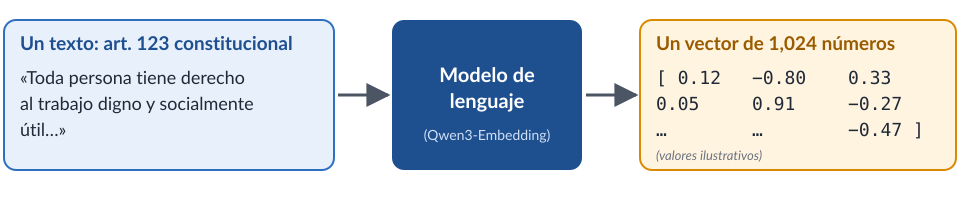
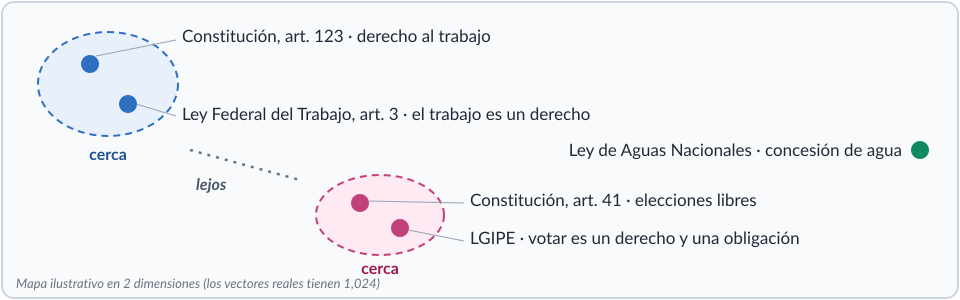
Disposiciones
Instrumentos
UMAP
“Aplanar” el espacio de 1,024 dimensiones a una hoja, de modo que los instrumentos cercanos queden juntos.
La vecindad (4, 8, 16 o 32) cambia el dibujo, no los datos.
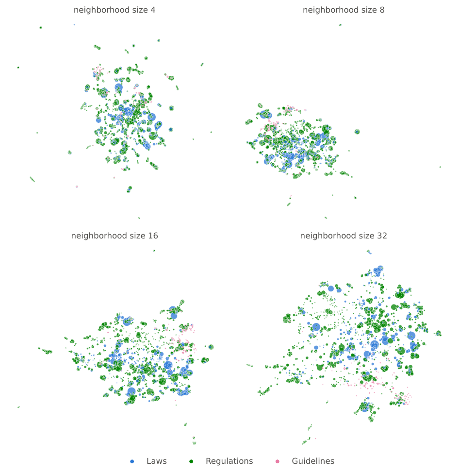
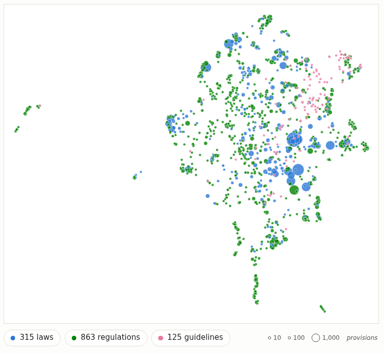
Cómo leer el mapa
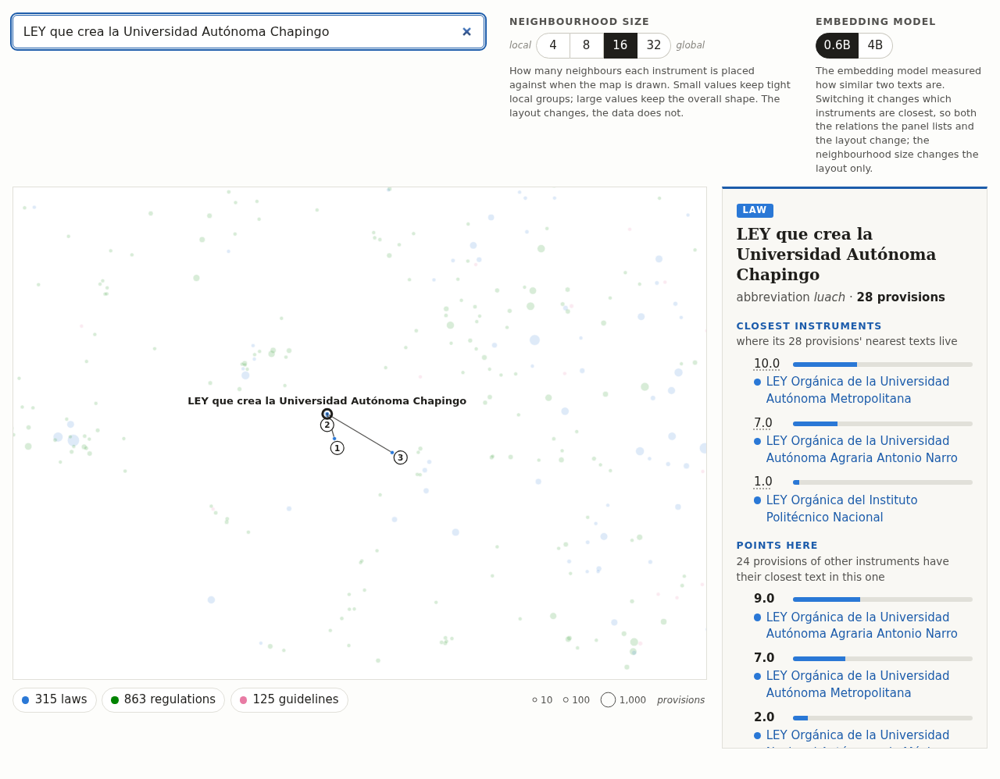
Ley de la UACh
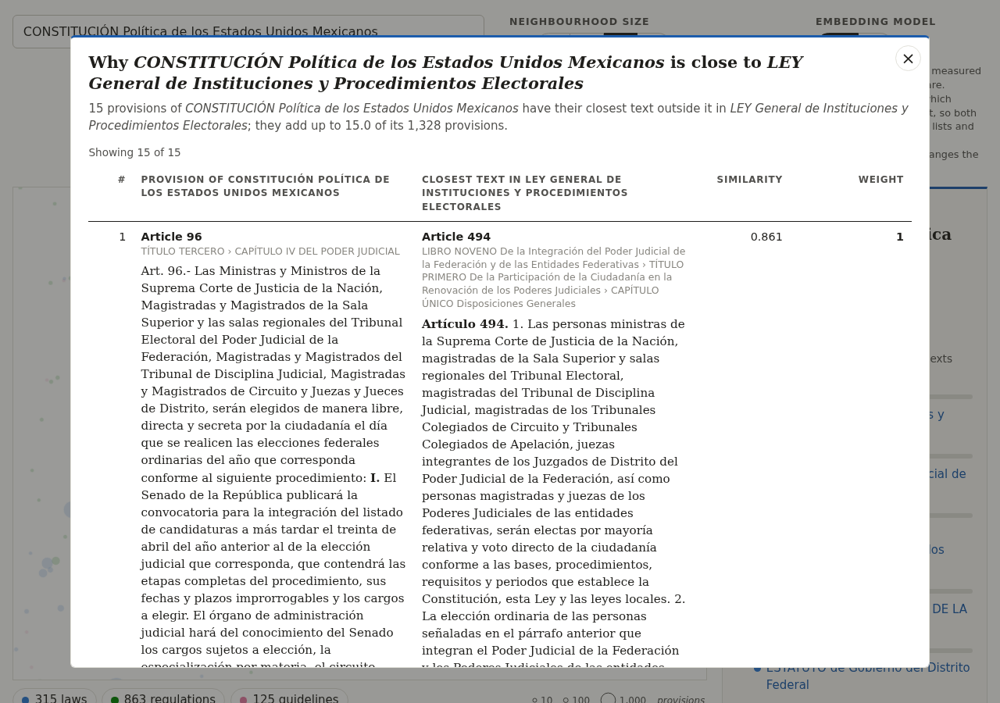
CPEUM
1,328 disposiciones, 137 contadas. Vecinos más cercanos:
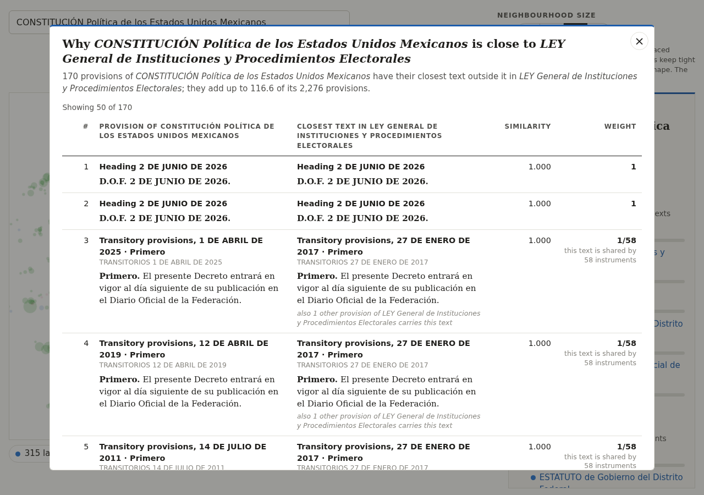
Pares de artículos
Cada peso abre la tabla de pares de artículos que lo explican.
Art. 96 CPEUM ↔︎ art. 494 LGIPE: similitud 0.86
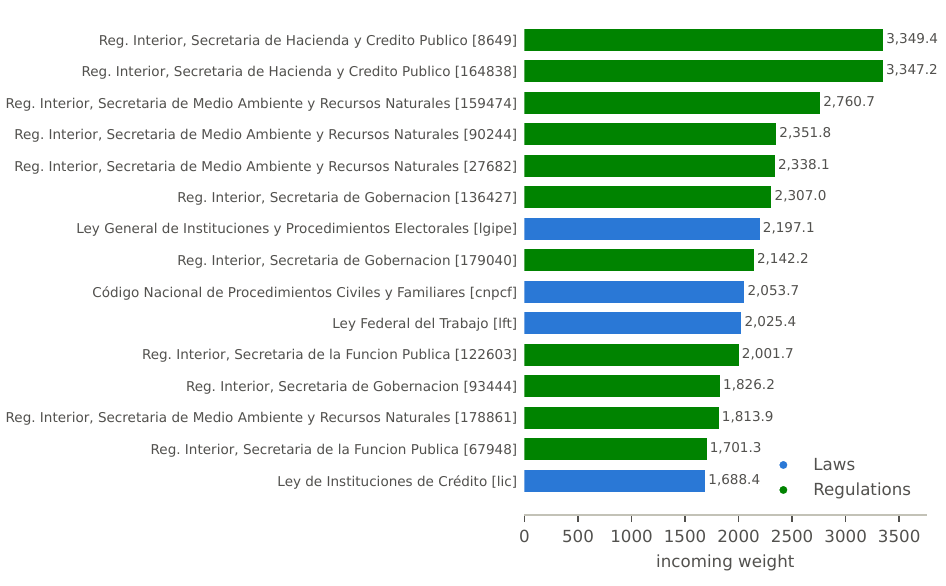
0.6B vs 4B
El modelo de representación cambia qué instrumentos están más cerca, y por tanto cambia las relaciones y el dibujo.
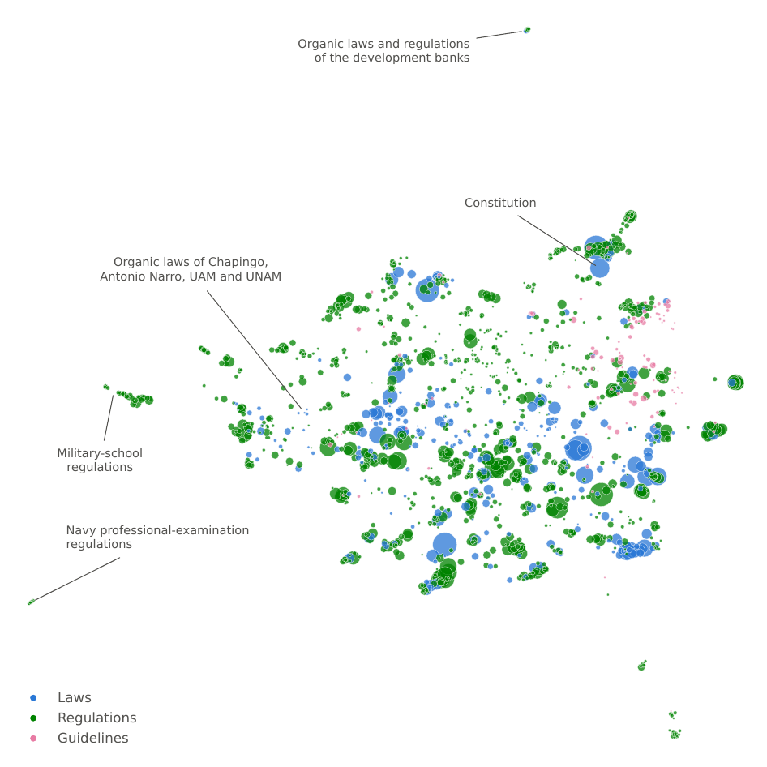
Objetivo general
Desarrollar y evaluar sistemas explicables de inteligencia artificial que ofrezcan respuestas trazables y eficientes, apoyados en corpus jurídicos, para tareas del derecho mexicano.
Objetivos específicos
PT1. Corpus abiertos
Meses 1–10
PT2. Sistemas híbridos explicables
Meses 4–15
PT3. Evaluación y difusión
Meses 7–18
Hitos
Buscador
Encontrar el artículo correcto, combinando búsqueda por palabras y por significado.
Preguntas
Responder citando las disposiciones, y abstenerse cuando no hay evidencia suficiente.
Resúmenes
Cada afirmación del resumen se vincula con el segmento del documento que la origina.
Eficiencia
Sistemas que priorizan la trazabilidad y la eficiencia sobre el cómputo de alto desempeño, pensados para las condiciones reales de instituciones y despachos.
Técnicas
Recursos y tareas
Todo es abierto
Paquetes en PyPI, releases con licencia Creative Commons, sitio web y código Apache 2.0: https://ingeotec.github.io/LegalIA/